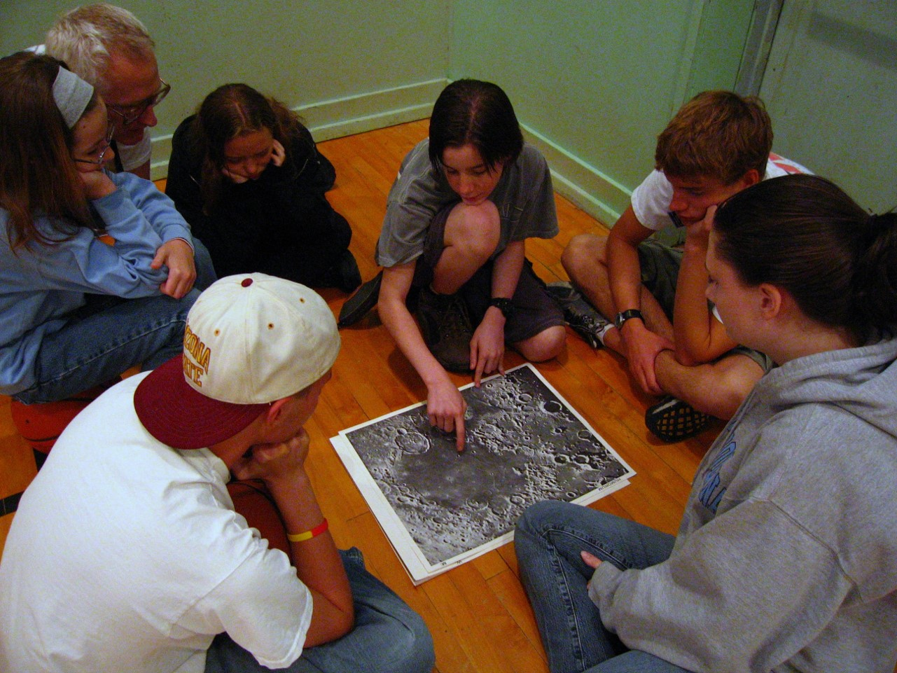

Astronomy Camp offers an opportunity to investigate our Universe in a new and exciting way.

General Camp Information
The Astronomy Camps are directed by astronomer Dr. Don McCarthy together with an engaging, knowledgable staff, many of whom are former Astronomy Campers. Building on 37 years of experience, they offer opportunities for both young, and old, to experience our Universe in new and exciting ways. Teenage students gain a
cosmic perspective of the Earth and themselves. We examine career alternatives and reinforce school lessons through real
scientific and engineering applications and investigations. With a wide range of topics and activities, Astronomy Camp is much more of a science engagement than purely star gazing. Adults escape from regular routines of daily life freeing them to wonder and
seek answers to a lifetime of questions. Every Camper is able to Reach for the Stars!
At night, Campers observe a plethora of celestial objects under dark skies. They become astronomers, operating research-class telescopes, keeping nighttime hours, interacting with leading scientists, interpreting their own observations, and investigating their own questions about astronomy and our Universe. Depending on the specific event, Campers use telescopes on Mt. Lemmon, such the 61-inch Kuiper telescope, and the 24, and 32-inch telescopes on Mt. Lemmon. It is often possible to use the Arizona Radio Observatory's 12m telescope, and the Submillimeter Radio Telescope on Mt. Graham, and the 90-inch Bok telescope. All Campers become intimately connected with some of the most advanced technologies available for cosmic discovery. Astronomy is about exploration of the unknown, and Astronomy Camp fosters that philosophy.
During the daytime, internationally known scientists speak on current scientific topics, including the latest NASA space missions. Students also engage in engineering-related projects (e.g., eTextiles, crystal radios, 3D-printing, map reading, etc.), explore the diverse geology and ecology though hiking, outdoor demonstrations, and travel between mountaintop observatories. The Camps also incorporate Space art and musical interpretations of scientific processes. All Camps include an in-depth tour of The University of Arizona's Richard F. Caris Mirror Laboratory, now producing not only the world's largest telescope mirrors with 8.4-meter diameters but also some of the most advanced large-format optical designs for telescopes to date.
Campers have an array of unique tools to help them explore the Universe. All telescopes can be equipped with a selection of instruments, including 35mm cameras, digital cameras, a photometer, three CCD cameras, two CCD spectrometers, and specialized equipment for detailing imaging of the Sun. The Advanced Camps feature access to professional instruments for imaging at visual and radio wavelengths. A complement of computers allows campers to analyze data using professional languages (AstroImageJ, Python, IRAF, IDL, SAOImage DS9, etc.) and to simulate astronomical phenomena. Chromebooks are used for collaborative projects, research, documentation, and presentations.
At night, Campers observe a plethora of celestial objects under dark skies. They become astronomers, operating research-class telescopes, keeping nighttime hours, interacting with leading scientists, interpreting their own observations, and investigating their own questions about astronomy and our Universe. Depending on the specific event, Campers use telescopes on Mt. Lemmon, such the 61-inch Kuiper telescope, and the 24, and 32-inch telescopes on Mt. Lemmon. It is often possible to use the Arizona Radio Observatory's 12m telescope, and the Submillimeter Radio Telescope on Mt. Graham, and the 90-inch Bok telescope. All Campers become intimately connected with some of the most advanced technologies available for cosmic discovery. Astronomy is about exploration of the unknown, and Astronomy Camp fosters that philosophy.
During the daytime, internationally known scientists speak on current scientific topics, including the latest NASA space missions. Students also engage in engineering-related projects (e.g., eTextiles, crystal radios, 3D-printing, map reading, etc.), explore the diverse geology and ecology though hiking, outdoor demonstrations, and travel between mountaintop observatories. The Camps also incorporate Space art and musical interpretations of scientific processes. All Camps include an in-depth tour of The University of Arizona's Richard F. Caris Mirror Laboratory, now producing not only the world's largest telescope mirrors with 8.4-meter diameters but also some of the most advanced large-format optical designs for telescopes to date.
Campers have an array of unique tools to help them explore the Universe. All telescopes can be equipped with a selection of instruments, including 35mm cameras, digital cameras, a photometer, three CCD cameras, two CCD spectrometers, and specialized equipment for detailing imaging of the Sun. The Advanced Camps feature access to professional instruments for imaging at visual and radio wavelengths. A complement of computers allows campers to analyze data using professional languages (AstroImageJ, Python, IRAF, IDL, SAOImage DS9, etc.) and to simulate astronomical phenomena. Chromebooks are used for collaborative projects, research, documentation, and presentations.
A Few Interesting Projects and Activities

On June 8, 2013, teenagers at the Beginning Teen Astronomy Camp communicated "live via amateur radio with astronaut Chris Cassidy who was orbiting Earth aboard the International Space Station.
{kind=link}
Sample Projects at Astronomy Camp:
- Measuring the mass of Jupiter (and Saturn) from time-sequence imaging of its moons.
- Can you find Pluto?
- Photometric lightcurves: Variable stars, exoplanets, Haumea (Kuiper Belt Object), ....
- Spectral line emission from the 12-CO molecule at radio wavelengths in the galaxy NGC 3310 using the 10-meter Submillimeter Radio Telescope (SMT).
- Astronomical Spectroscopy.
- Measuring the Hubble Constant.
{kind=link}
{kind=link}
{kind=link}
{kind=link}
{kind=link}
- Adaptive optics images of weather on the planet Neptune from the Large Binocular Telescope at infrared wavelengths
- Image of the NGC 3718 galaxy cluster (Astronomy Picture of the Day) combining electronic data from the 60-inch and 12-inch telescopes.
- Color image of the interacting galaxy, Arp 220, obtained at the 61" telescope with a 1024x1024 CCD at the 1997 Advanced Teen Camp.
{kind=link}
{kind=link}
On June 8, 2013, teenagers at the Beginning Teen Astronomy Camp communicated "live via amateur radio with astronaut Chris Cassidy who was orbiting Earth aboard the International Space Station.
MAP of The University of Arizona campus.
Home | Information | Registration | Articles | Links
All Images, Media and Content - Copyright © 2023 Astronomy Camp
Site Design by Jacob Omann. Maintained by Astronomy Camp. Updated Nov 24, 2023
All Images, Media and Content - Copyright © 2023 Astronomy Camp
Site Design by Jacob Omann. Maintained by Astronomy Camp. Updated Nov 24, 2023